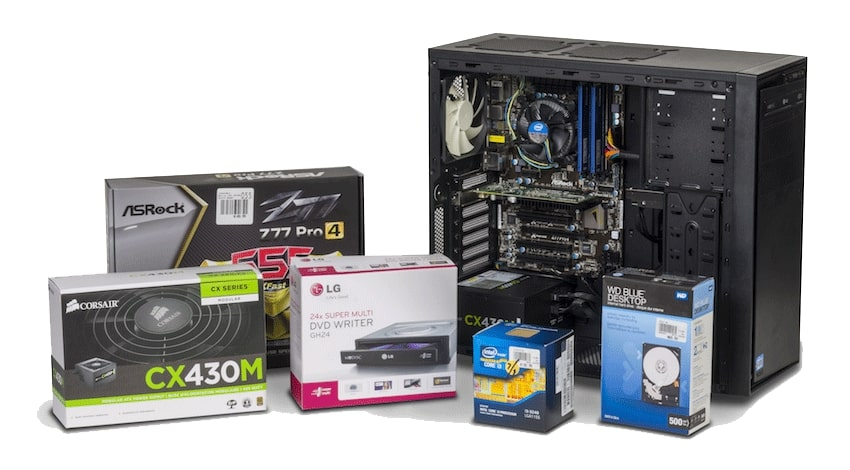

В основе модернизации лежит замена главных комплектующих персонального компьютера:
- Замена процессора. Как один из способов увеличить производительность компьютера,
но эта характеристика тесно связана с производительностью остальных комплектующих.
- Новая материнская плата. Которая поддерживает старый процессор и новые технологии
(USB, SATA, PCI-Express, DDR2/DDR3/DDR4).
увеличение объёма оперативной памяти, которая используется операционной системой для временного хранения
информации. Обычно чем больше объём оперативной памяти, тем выше производительность компьютера.
- Увеличение объёма оперативной памяти. Это съёмное устройство, которое находится в
системном блоке и подключено к материнской плате через стандартный интерфейс (ATA или SATA). Можно
подключить несколько жёстких дисков (RAID-массив)). Или заменить/дополнить диск SSD-накопителем.
- Замена видеокарты. Позволит более комфортно играть в компьютерные игры и работать
в графических приложениях.
модернизация (в том числе оптимизация и тонкая настройка) программной части. Также повысить
производительность ПК, добавить новые функции и исправить ошибки по управлению аппаратной частью ПК
можно обновлением драйверов.
